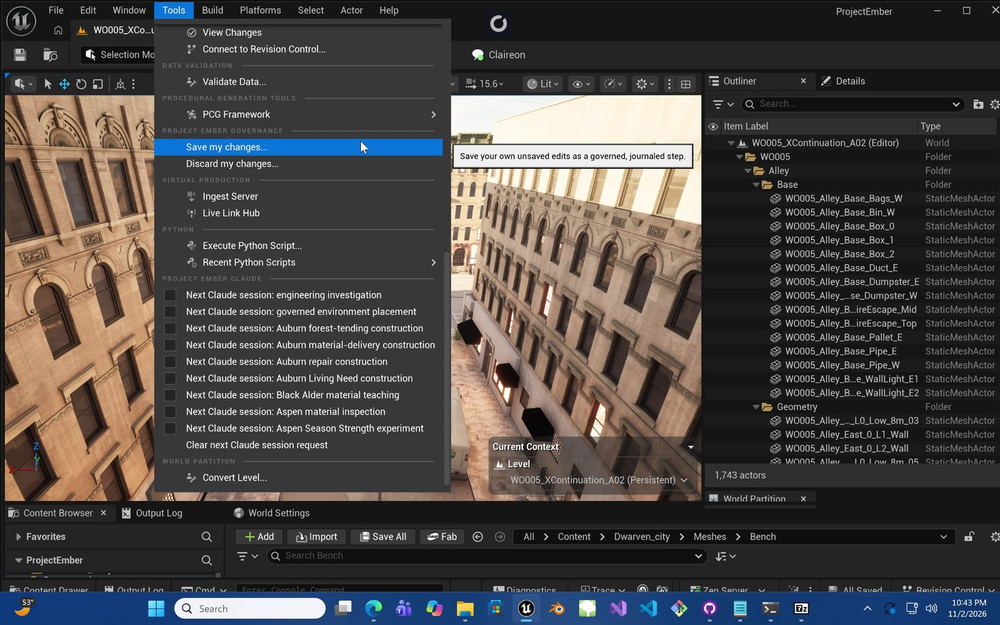
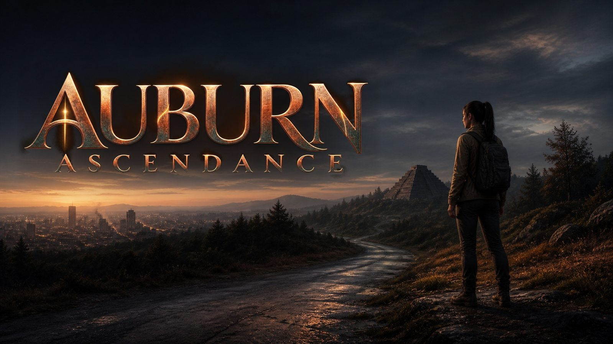
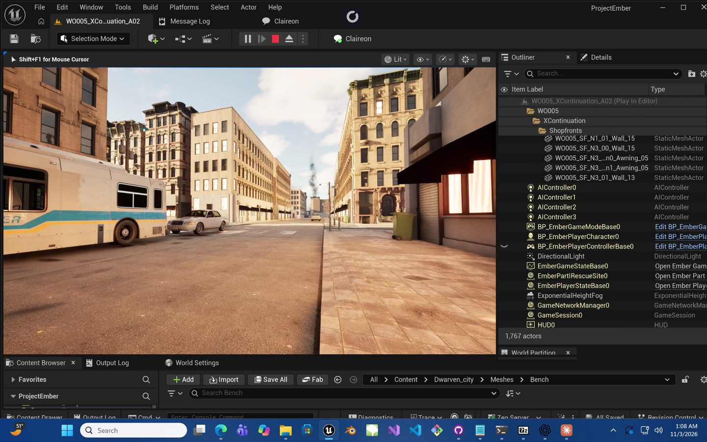
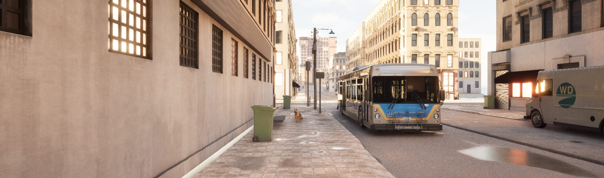
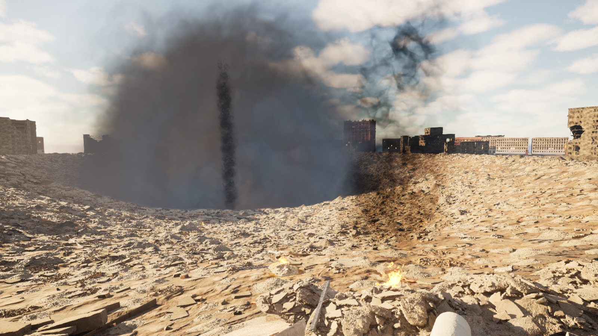

Tools inside Unreal
Custom editor commands support scoped, intent-journaled project changes.
I build interactive software, game systems, and the tools that make complex development possible.

Auburn Ascendance — promotional illustration, not an in-game screenshot.

A custom C++ engineering platform supporting Auburn Ascendance, an original narrative-driven game developed in Unreal Engine.
I began by writing the project's gameplay foundations and framework definitions, then developed editor tooling and governed AI-assisted engineering workflows to support increasingly complex development.
Read the case study · PDF
Custom editor commands support scoped, intent-journaled project changes.

Constructing and testing environments for narrative-driven gameplay.

World-state research and observed environmental changes inform bounded development decisions.
Earlier interactive projects spanning third-person movement, physics-oriented navigation, and flight. The clips below are recordings from the actual game builds, compressed for viewing.
Third-person endless-runner prototype with obstacles, lane navigation, and collectibles.
Unity GameplaySmall rocket piloting through a stylized three-dimensional obstacle course; interactive audio integration work.
Unity Movement WwiseSpacecraft navigation through environmental terrain with aiming and visual effects.
Unity 3D FlightMy work bridges interactive design, technical research, and creative production. Before Project Ember, I developed Unity games and XR applications and applied audio-engineering skills to real-time interactive experiences.
In Project Ember, that interest expanded into C++ game architecture, custom Unreal Editor plugins, structured AI-assisted engineering workflows, and research into observing and reasoning about complex 3D worlds.
I’m interested in collaborative roles involving developer tools, technical game development, real-time systems, XR, and technical prototyping.
I’m based in New York and open to conversations about development, technical tools, immersive experiences, and collaboration.